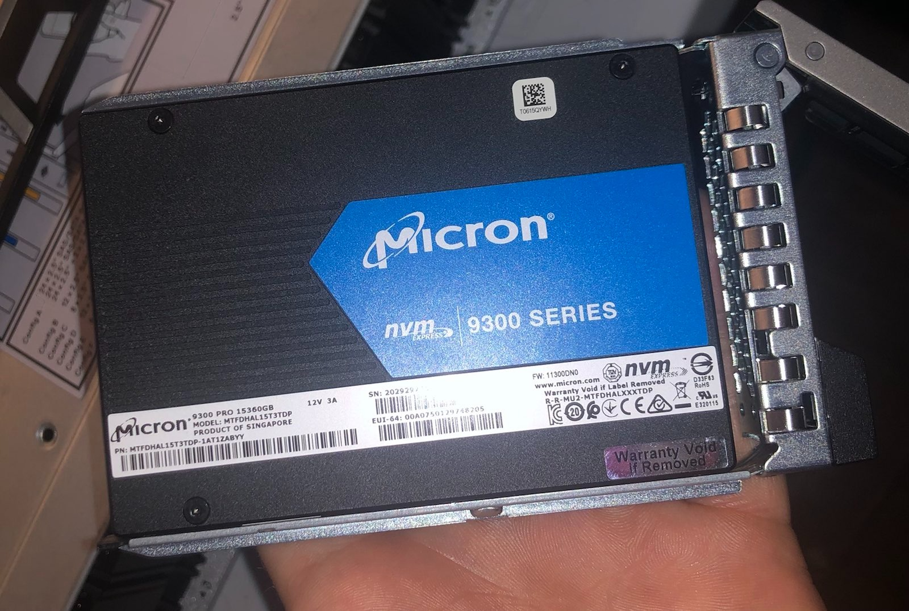

Get NVMe Drives from iDRAC Redfish
- Get NVMe Drives from iDRAC Redfish
- Exploring iDRAC Detected Storage
- Understand the Behavior of Unqualified Drives
- Getting a Drive's Stats
Exploring iDRAC Detected Storage
I used the Storage API endpoint to accomplish this.
From my host I received:
{"@odata.context":"/redfish/v1/$metadata#StorageCollection.StorageCollection","@odata.id":"/redfish/v1/Systems/System.Embedded.1/Storage/","@odata.type":"#StorageCollection.StorageCollection","Description":"Collection Of Storage entities","Members":[{"@odata.id":"/redfish/v1/Systems/System.Embedded.1/Storage/RAID.Slot.4-1"},{"@odata.id":"/redfish/v1/Systems/System.Embedded.1/Storage/RAID.Embedded.1-1"},{"@odata.id":"/redfish/v1/Systems/System.Embedded.1/Storage/CPU.1"},{"@odata.id":"/redfish/v1/Systems/System.Embedded.1/Storage/AHCI.Slot.2-1"}],"Members@odata.count":4,"Name":"Storage Collection"}
I'm running an R840 which is Dell 14G which I know does not have NVMe RAID controllers as an option so I know my NVMe drives must be hanging off the CPU. IE: /redfish/v1/Systems/System.Embedded.1/Storage/CPU.1. I can expect that the BOSS card is hanging off of AHCI and that any SAS/SATA drives are likely on the RAID controller. The results above also imply that the host above runs a mixed backplane given the presence of RAID and CPU.1. Checking CPU.1 gets me:
{
"@odata.context": "/redfish/v1/$metadata#Storage.Storage",
"@odata.id": "/redfish/v1/Systems/System.Embedded.1/Storage/CPU.1",
"@odata.type": "#Storage.v1_8_0.Storage",
"Description": "CPU.1",
"Drives": [
{
"@odata.id": "/redfish/v1/Systems/System.Embedded.1/Storage/CPU.1/Drives/Disk.Bay.21:Enclosure.Internal.0-1"
},
{
"@odata.id": "/redfish/v1/Systems/System.Embedded.1/Storage/CPU.1/Drives/Disk.Bay.19:Enclosure.Internal.0-1"
},
{
"@odata.id": "/redfish/v1/Systems/System.Embedded.1/Storage/CPU.1/Drives/Disk.Bay.20:Enclosure.Internal.0-1"
},
{
"@odata.id": "/redfish/v1/Systems/System.Embedded.1/Storage/CPU.1/Drives/Disk.Bay.23:Enclosure.Internal.0-1"
},
{
"@odata.id": "/redfish/v1/Systems/System.Embedded.1/Storage/CPU.1/Drives/Disk.Bay.18:Enclosure.Internal.0-1"
},
{
"@odata.id": "/redfish/v1/Systems/System.Embedded.1/Storage/CPU.1/Drives/Disk.Bay.22:Enclosure.Internal.0-1"
}
],
"Drives@odata.count": 6,
"Id": "CPU.1",
"Links": {
"Enclosures": [
{
"@odata.id": "/redfish/v1/Chassis/Enclosure.Internal.0-1"
},
{
"@odata.id": "/redfish/v1/Chassis/System.Embedded.1"
}
],
"Enclosures@odata.count": 2
},
"Name": "CPU.1",
"Status": {
"Health": "OK",
"HealthRollup": "OK",
"State": "Enabled"
},
"Volumes": {
"@odata.id": "/redfish/v1/Systems/System.Embedded.1/Storage/CPU.1/Volumes"
}
}
From the above I can deduce that CPU 1 has six drives attached to it. Or does it?
Understand the Behavior of Unqualified Drives
Here is a picture of the front of my server:
Here is the front of my server. You might say, "Wait, there are 7 drives!?" The problem is this 7th drive isn't qualified by Dell. It will still work just fine however, iDRAC won't know how to talk to it so it won't show up:

You can confirm this is the case by checking the Storage->Physical Disks tab inside the iDRAC itself:

Here you can see that I only have the 6 NVMe drives plus two SATA SSDs. While the iDRAC's personality module won't be able to properly sort the drive into Storage it will detect it as a PCIe device and accurately read the vendor information:
Getting a Drive's Stats
We can select one of them with /redfish/v1/Systems/System.Embedded.1/Storage/CPU.1/Drives/Disk.Bay.21:Enclosure.Internal.0-1.
This achieves the desired result and gets a dump of that drive's data. The size is available under the field CapacityBytes.
{
"@odata.context": "/redfish/v1/$metadata#Drive.Drive",
"@odata.id": "/redfish/v1/Systems/System.Embedded.1/Storage/CPU.1/Drives/Disk.Bay.21:Enclosure.Internal.0-1",
"@odata.type": "#Drive.v1_9_0.Drive",
"Actions": {
"#Drive.SecureErase": {
"@Redfish.OperationApplyTimeSupport": {
"@odata.type": "#Settings.v1_3_0.OperationApplyTimeSupport",
"SupportedValues": [
"Immediate",
"OnReset"
]
},
"target": "/redfish/v1/Systems/System.Embedded.1/Storage/CPU.1/Drives/Disk.Bay.21:Enclosure.Internal.0-1/Actions/Drive.SecureErase"
}
},
"Assembly": {
"@odata.id": "/redfish/v1/Chassis/System.Embedded.1/Assembly"
},
"BlockSizeBytes": 0,
"CapableSpeedGbs": 7.876923076923077,
"CapacityBytes": 3200631791616,
"Description": "PCIe SSD in Slot 21 in Bay 1",
"EncryptionAbility": "None",
"EncryptionStatus": "Unencrypted",
"FailurePredicted": false,
"HotspareType": "None",
"Id": "Disk.Bay.21:Enclosure.Internal.0-1",
"Identifiers": [
{
"DurableName": null,
"DurableNameFormat": null
}
],
"Identifiers@odata.count": 1,
"Links": {
"Chassis": {
"@odata.id": "/redfish/v1/Chassis/Enclosure.Internal.0-1"
},
"PCIeFunctions": [],
"PCIeFunctions@odata.count": 0,
"Volumes": [
{
"@odata.id": "/redfish/v1/Systems/System.Embedded.1/Storage/CPU.1/Volumes/Disk.Bay.21:Enclosure.Internal.0-1"
}
],
"Volumes@odata.count": 1
},
"Location": [],
"Manufacturer": "Intel Corporation ",
"MediaType": "SSD",
"Model": "Dell Express Flash NVMe P4610 3.2TB SFF",
"Name": "PCIe SSD in Slot 21 in Bay 1",
"NegotiatedSpeedGbs": 7.876923076923077,
"Oem": {
"Dell": {
"@odata.type": "#DellOem.v1_1_0.DellOemResources",
"DellDriveSMARTAttributes": null,
"DellNVMeSMARTAttributes": {
"@odata.id": "/redfish/v1/Systems/System.Embedded.1/Storage/CPU.1/Drives/Disk.Bay.21:Enclosure.Internal.0-1/Oem/Dell/DellNVMeSMARTAttributes"
},
"DellPCIeSSD": {
"@odata.context": "/redfish/v1/$metadata#DellPCIeSSD.DellPCIeSSD",
"@odata.id": "/redfish/v1/Systems/System.Embedded.1/Storage/CPU.1/Drives/Disk.Bay.21:Enclosure.Internal.0-1/Oem/Dell/DellPCIeSSDs/Disk.Bay.21:Enclosure.Internal.0-1",
"@odata.type": "#DellPCIeSSD.v1_4_0.DellPCIeSSD",
"Bus": "CA",
"BusProtocol": "PCIE",
"Description": "An instance of DellPCIeSSD will have PCIe Solid State Drive specific data.",
"Device": "0",
"DeviceProtocol": "NVMe-MI1.0",
"DriveFormFactor": "2.5Inch",
"FreeSizeInBytes": null,
"Function": "0",
"HotSpareStatus": null,
"Id": "Disk.Bay.21:Enclosure.Internal.0-1",
"MediaType": "SolidStateDrive",
"Name": "DellPCIeSSD",
"PCIeCapableLinkWidth": "x4",
"PCIeNegotiatedLinkWidth": "x4",
"ProductID": "a54",
"RAIDType": "Unknown",
"RaidStatus": null,
"Slot": 21,
"SystemEraseCapability": "CryptographicErasePD",
"UsedSizeInBytes": 0
},
"DellPhysicalDisk": {
"@odata.context": "/redfish/v1/$metadata#DellPhysicalDisk.DellPhysicalDisk",
"@odata.id": "/redfish/v1/Systems/System.Embedded.1/Storage/CPU.1/Drives/Disk.Bay.21:Enclosure.Internal.0-1/Oem/Dell/DellDrives/Disk.Bay.21:Enclosure.Internal.0-1",
"@odata.type": "#DellPhysicalDisk.v1_3_0.DellPhysicalDisk",
"Certified": null,
"Connector": null,
"Description": "An instance of DellPhysicalDisk will have Physical Disk specific data.",
"DeviceProtocol": "NVMe-MI1.0",
"DriveFormFactor": "2.5Inch",
"EncryptionProtocol": null,
"ForeignKeyIdentifier": null,
"FreeSizeInBytes": null,
"Id": "Disk.Bay.21:Enclosure.Internal.0-1",
"LastSystemInventoryTime": null,
"LastUpdateTime": null,
"ManufacturingDay": null,
"ManufacturingWeek": null,
"ManufacturingYear": null,
"Name": "DellPhysicalDisk",
"NonRAIDDiskCachePolicy": null,
"OperationName": null,
"OperationPercentCompletePercent": null,
"PCIeCapableLinkWidth": "x4",
"PCIeNegotiatedLinkWidth": "x4",
"PPID": null,
"PowerStatus": null,
"PredictiveFailureState": null,
"ProductID": "a54",
"RAIDType": "Unknown",
"RaidStatus": null,
"SASAddress": null,
"Slot": 21,
"SystemEraseCapability": "CryptographicErasePD",
"T10PICapability": null,
"UsedSizeInBytes": 0,
"WWN": null
}
}
},
"Operations": [],
"Operations@odata.count": 0,
"PartNumber": "TW02CN1TPIHIT9A9013TA02",
"PhysicalLocation": {
"PartLocation": {
"LocationOrdinalValue": 21,
"LocationType": "Slot"
}
},
"PredictedMediaLifeLeftPercent": 100,
"Protocol": "PCIe",
"Revision": "VDV1DP23",
"RotationSpeedRPM": null,
"SerialNumber": "PHLN9396002Q3P2BGN",
"Status": {
"Health": "OK",
"HealthRollup": "OK",
"State": "Enabled"
},
"WriteCacheEnabled": false
}